Actual production-browser captures at matched inspection-camera poses. Stall relocation is authorized. The scaffold, stage, lighting and quarry geometry are preserved. Low-DPR cloud captures are not a physical GPU benchmark.
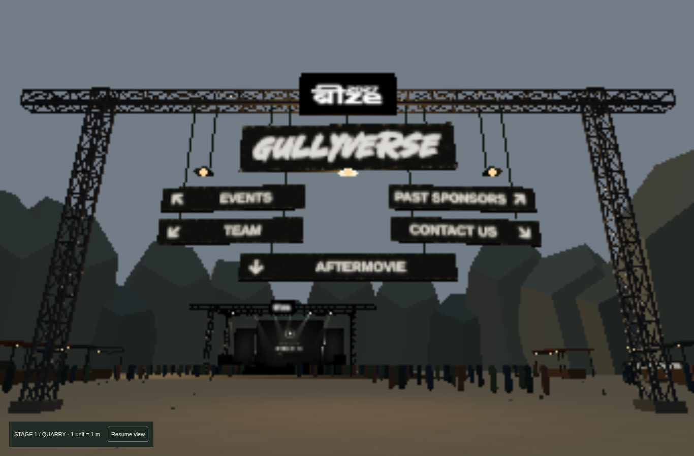
Camera [0, 1.72, -51] → [0, 8, -70], FOV 58; 1366 × 900, DPR .25, tier 3.
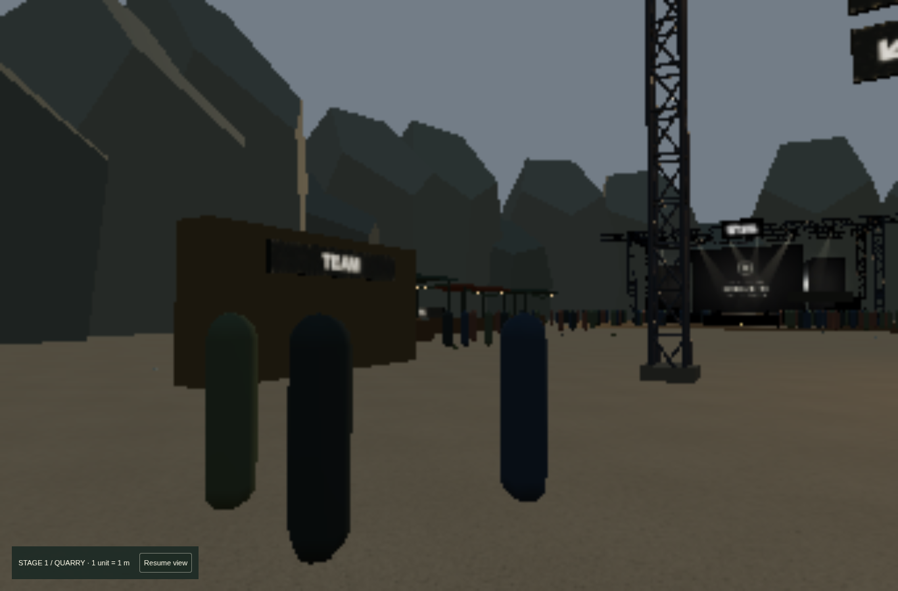
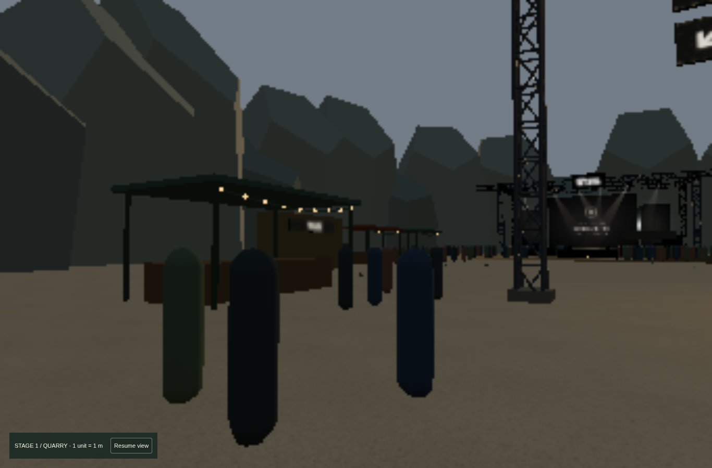
Camera [-10, 1.72, -54] → [-24, 2.5, -78], FOV 58; 1366 × 900, DPR .25, tier 3.
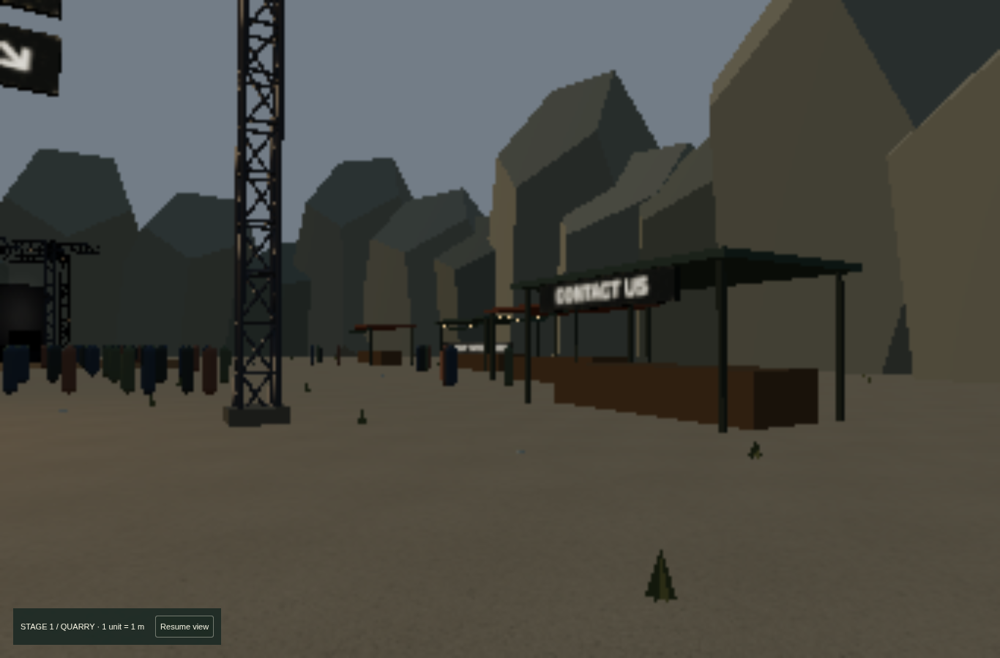
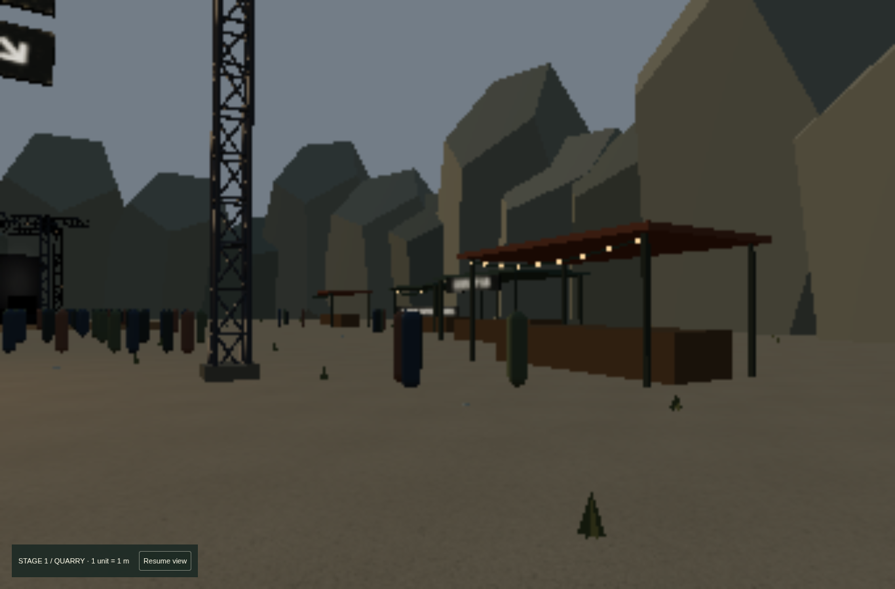
Camera [10, 1.72, -54] → [24, 2.5, -78], FOV 58; 1366 × 900, DPR .25, tier 3.
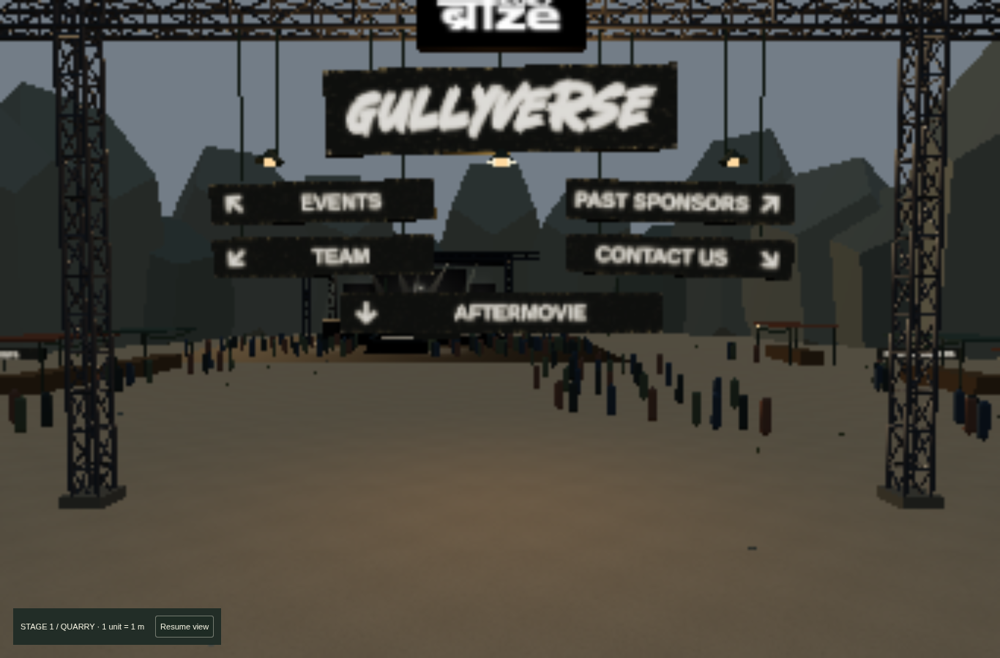
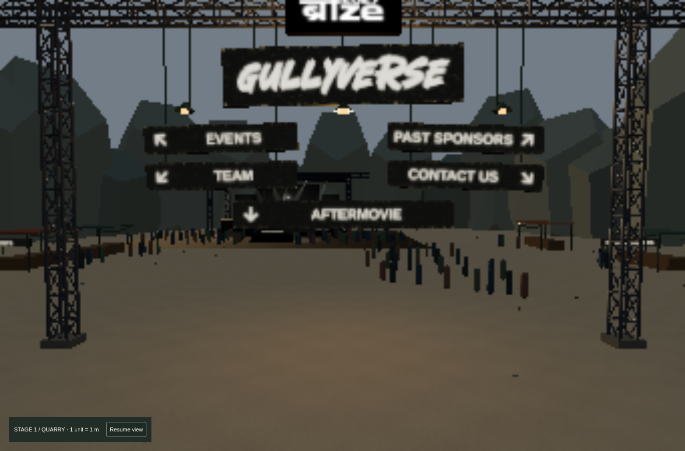
Camera [0, 6, -51] → [0, 4, -92], FOV 58; 1366 × 900, DPR .25, tier 3.
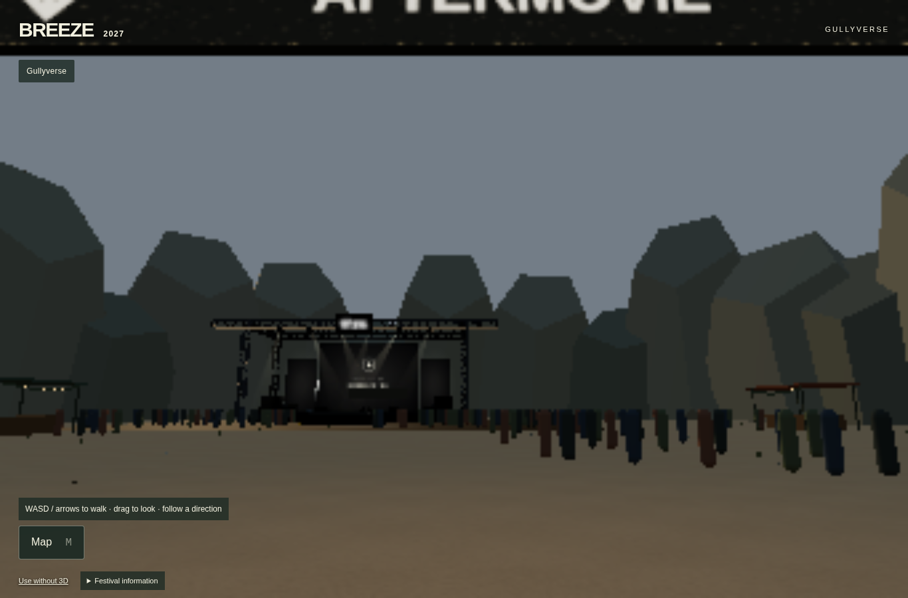
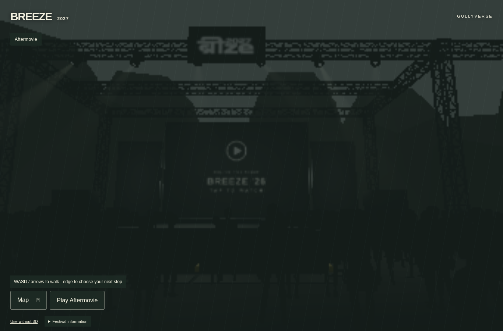
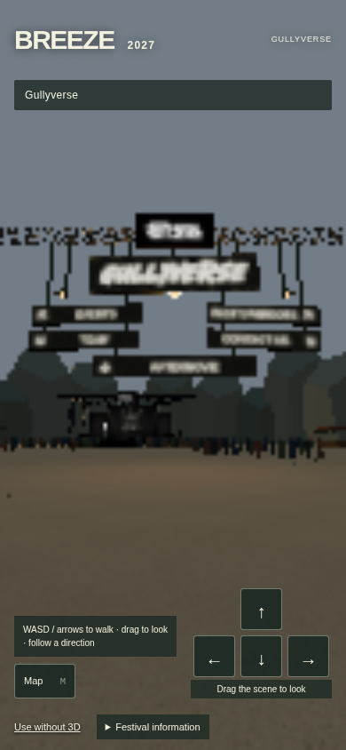
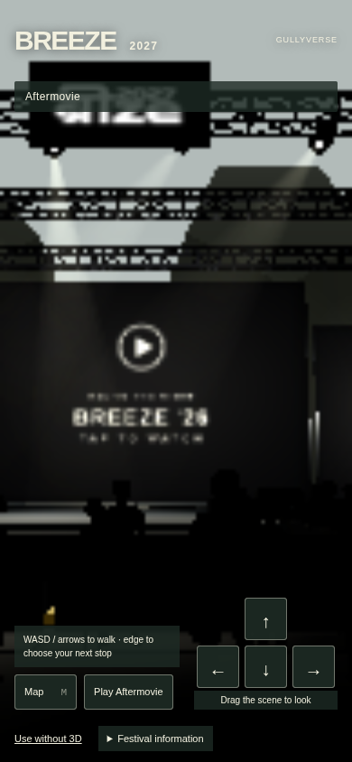
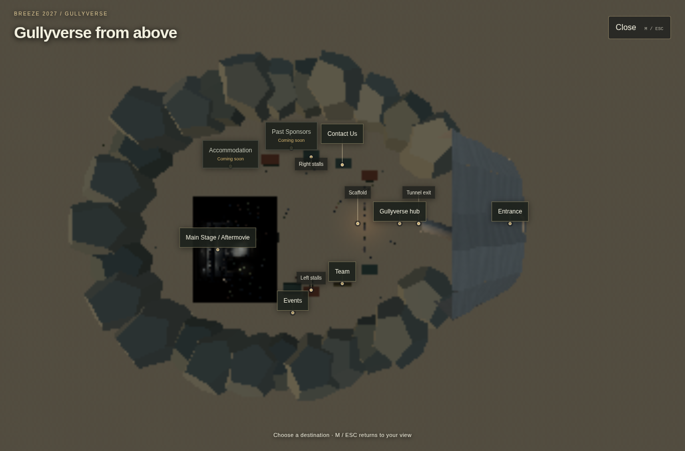